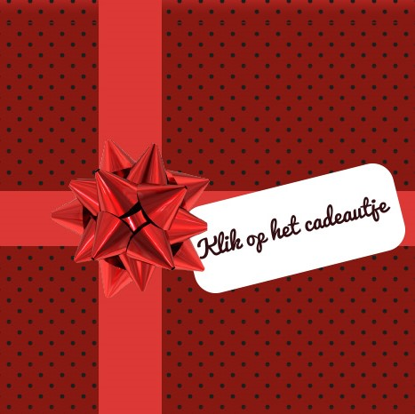

Verrassing
Molovich
- ‘Biertje dan maar?’  – ‘Graag.’ – ‘Vermoeiende dag?’ – ‘Nah. Naar de bilbiotheek geweest. Met de bus.’ – ‘Gaat daar een bus naartoe?’ – ‘De bus stopt op het stationsplein.’ – ‘Ah. En vandaar moet je lopen?’ – ‘Ja, ik was met mijn zoon. Die sliep in zijn kinderwagen.’ – ‘Goed zo. Lekker wandelweer?’ – ‘Nee. Het regende en het waaide.’ – ‘Tja. Wat een chaos trouwens hè, daar.’ – ‘Nou! Die bouwputten! Ik moest godbetere het over een plank verder!’ – ‘Ja, schandalig is het. Maar wel mooi hè, die nieuwe bibliotheek.’ – ‘Ja, ik geloof het wel. Het was eigenlijk te groot om in z’n geheel te kunnen zien.’ – ‘Ik kan me nog herinneren dat daar ooit het postkantoor stond.’
– ‘Leuk dat je dat zegt. Vlak voordat ik de bibliotheek binnen wil gaan, vraagt een vrouw of dit het postkantoor is!’ – ‘Dat meen je niet! Onder welke steen hadden ze die vandaan getrokken.’ – ‘Onder een Franse steen.’ – ‘Ah. Vandaar. En, heb je haar kunnen vertellen waar ze dan moest zijn?’ – ‘Nee, dat was het vreemde. Ze werd afgeleid door een Renault 21 die zo’n honderd meter verder achteruit van ons aan het wegrijden was.’ – ‘Haar man?’ – ‘Wellicht. Anyways. Ik wil haar vertellen dat ze naar de Raadhuisstraat moet, maar ik denk dat ze me niet hoorde, want terwijl ik het zeg rent ze weg naar de Renault.’
– ‘Eigenaardig.’ – ‘Ja, eigenaardig. Maar goed. Ik naar boven. Zoeken bij de Q. Maar niks hoor. Ik kijk op de computer. En volgens de computer is het gewoon aanwezig. Dus ik naar een medewerker. Die medewerker kijkt met me mee. Vindt ook niks.’ – ‘Vreemd.’ – ‘Vreemd ja. Maar die medewerker zegt dat ze bij het magazijn nog wel een exemplaar hebben. Moet ik even een mailtje sturen. Dus ik stuur een mail. Wacht vijftien minuten. Wat denk je?’ – ‘Nou?’ – ‘Volgens het magazijn ligt het boek gewoon waar het hoort te liggen.’ – ‘Dus?’ – ‘Dus? Dus dat was balen, want daar had ik de hele tijd al gekeken.
– En het boek lag echt niet waar het hoorde te liggen.’ – ‘Eigenaardig.’ – ‘Kun je wel zeggen ja.’ – ‘Dus je bent helemaal voor niks naar de bibliotheek gegaan.’ – ‘Kort gezegd komt het daar inderdaad op neer.’ – ‘Weggegooide dag.’ – ‘Nou. Ook weer niet helemaal. Want op het Bos en Lommerplein, vlak bij waar ik woon, vind ik in een babywinkel de perfecte babyschoentjes voor mijn zoon.’ – ‘Als je daar gelukkig van wordt… Welk boek zocht je eigenlijk?’ – ‘Stijloefeningen van Raymond Queneau.’ – ‘O ja? Wat grappig. Je bedoelt dit boek?’ – ‘Verdomd! Hoe kom je daaraan?’ – ‘Daar mag ik niks over loslaten. Nog een biertje?’ – ‘Ik sla alleen vliegen af.’